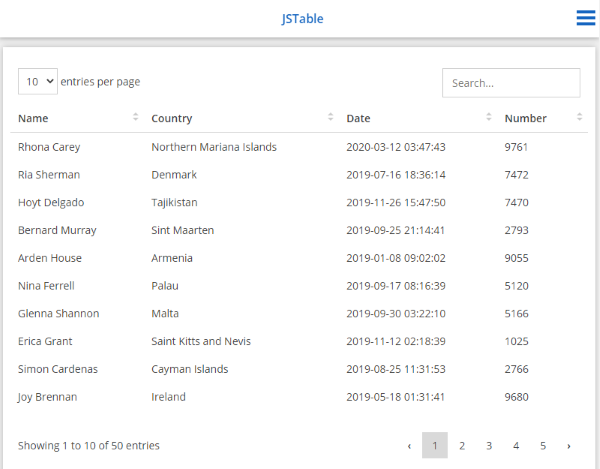
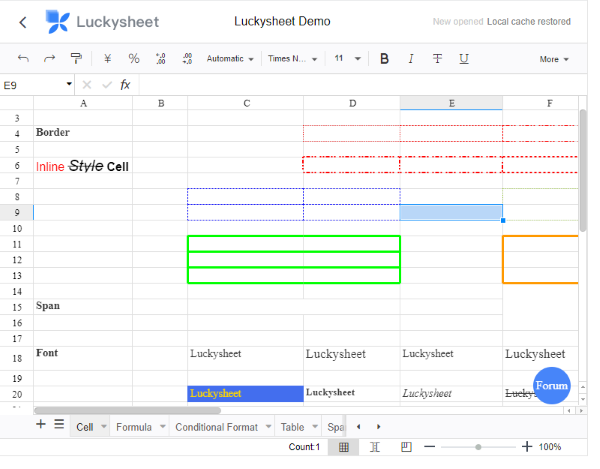
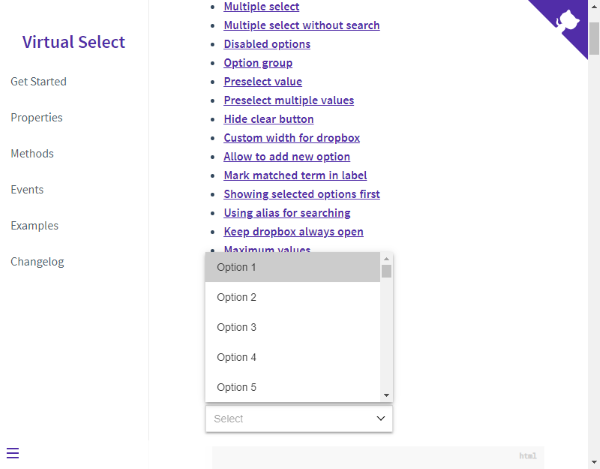
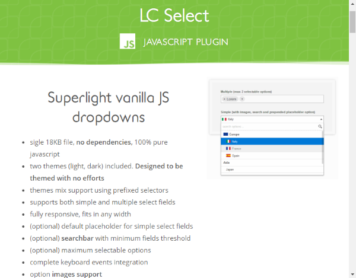
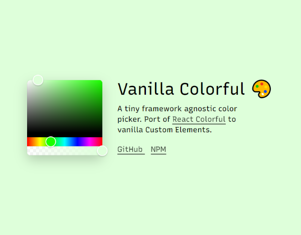
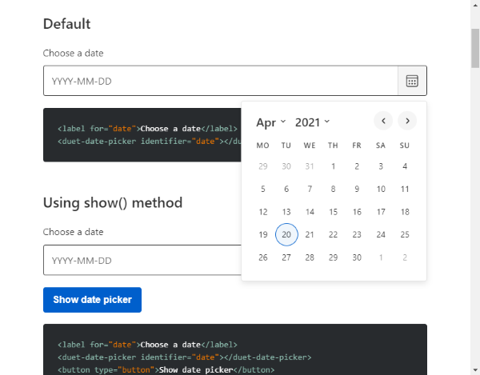
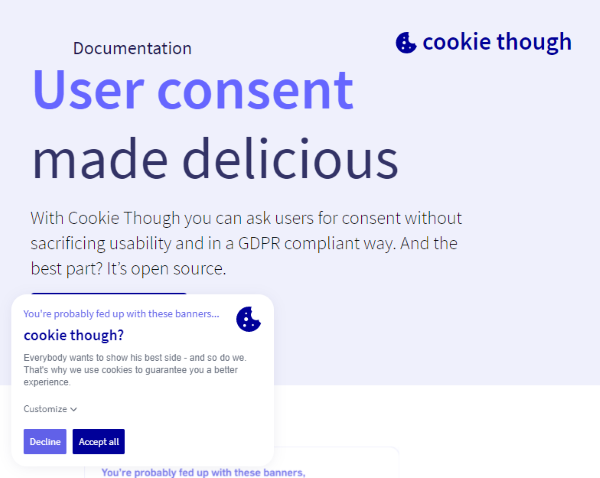
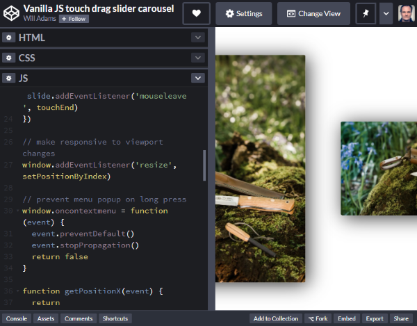
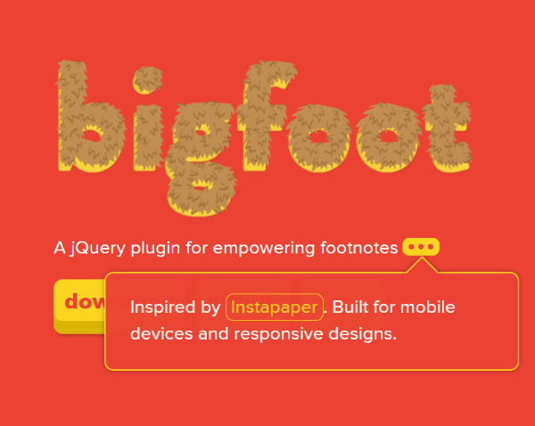
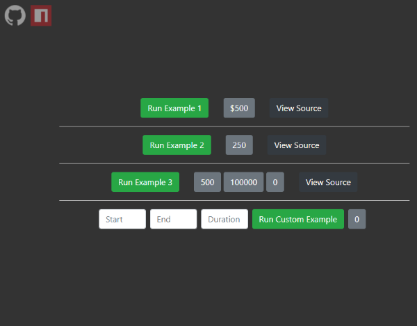

Discoveries #9
Todays issue is all about extending your Web Developers toolbox with some useful libraries to provide the best UX to your users or visitors. Tables, Dropdowns, Color Pickers, Footnotes and GDPR dialogs on steroids.
- JSTable
- Luckysheet
- Virtual Select
- LC Select
- Vanilla Colorful
- Duet Date Picker
- Cookie Though
- Full-Screen-Touch-Slider
- Bigfoot
- Number Rollup
JSTable
by Tobias Hägenläuerhttps://github.com/Trekky12/JSTable
JSTable is a library to convert a static HTML TABLE element into an interactive and responsive one, which supports paging, sorting and searching.
Luckysheet
by MengShu Open Sourcehttps://github.com/mengshukeji/Luckysheet
Luckysheet is an Excel or Google Sheets clone, for using in your own web projects. It is nearly as powerfull as his role models, but Open Source. Supports imports and has a plugin interface.
Virtual Select
by Sa Si Devhttps://sa-si-dev.github.io/virtual-select/#/
Whoever ‘Sa Si Dev’ is … he/she made a replacement for the ordinary HTML SELECT element, which is nearly unrivalled. It supports search, matched term marking, multi-select, disabling options, option groups, adding new options and many others. One of the best features, is the dialog style select on mobile devices.
LC Select
by Lucahttps://lcweb.it/lc-select-javascript-plugin
Luca from Italy made this excellent SELECT replacement, which can show the selected options as pills or as grouped lists with images. It supports a search bar, light/dark theme, multilanguage and is mobile ready as well as it has full keyboard support.
Vanilla Colorful
by Serhii Kulykovhttps://web-padawan.github.io/vanilla-colorful/
This color picker is just awesome. It looks really pleasing and has all the features you expect. It is written in TypeScript and authored using native ES modules, without dependencies.
Duet Date Picker
by Duet Design Systemhttps://duetds.github.io/date-picker/
This clean looking date picker is easy to integrate and supports mostly everything you can expect: keyboard, mobile devices and even screen readers.
Cookie Though
by In The Pockethttps://cookiethough.dev/
Since the GDPR has hit the industry, there are tons of solutions to show the necessary consent dialog. A team from Belgium has made a really nice one, without misleading buttons, annoying full screen modes or other dark patterns. And it is Open Source…
Full-Screen-Touch-Slider
by Will Adamshttps://github.com/bushblade/Full-Screen-Touch-Slider
Will has created a really simple, but good looking and animated full screen touch slider, which works great on mobile devices. The only question is: Why is he so addicted to knifes?
Bigfoot
by Chris Sauvehttp://www.bigfootjs.com/
Chris from Canada has a smart solution for showing footnotes in HTML documents: show them as bubbles above the text by clicking a tiny button, which replaces the orginial footnote. Only drawback: it’s a jQuery plugin…
Number Rollup
by marknorrapscmhttps://marknorrapscm.github.io/number-rollup/
Number Rollup does what the name suggests: it rollups a number from a starting to an end point, animated and customizable. Nice.
You can interact with this article (applause, criticism, whatever) by mention it in one of your posts, which will also be shown here as a Webmention ... or you leave a good old comment with your GitHub account.
Webmentions
No Webmentions yet...
In case your blog software can't send Webmentions, you can use this form to submit me a mention of this article...


 There are many Mastodon instances out there.
Tell me yours and I will redirect you to the share dialog of your server:
There are many Mastodon instances out there.
Tell me yours and I will redirect you to the share dialog of your server:
Comments